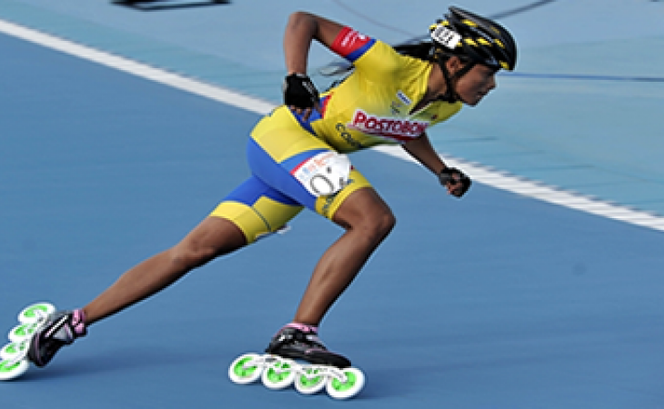
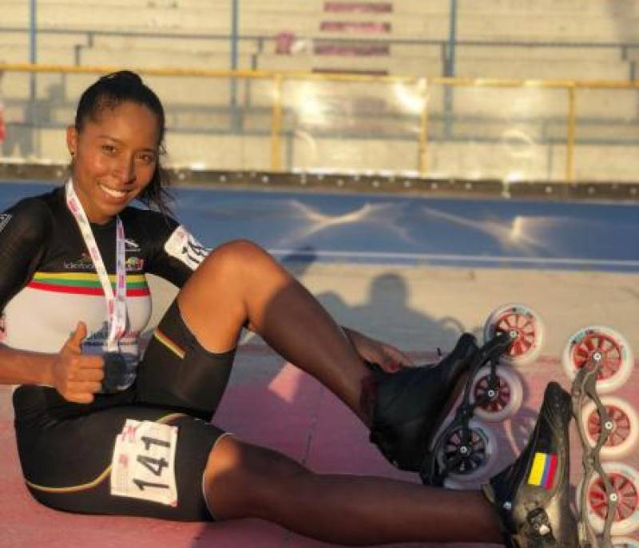

PATINAJE DE VELOCIDAD
¿QUE ES ESTO?
El patinaje de velocidad sobre ruedas o patinaje de velocidad en línea es una modalidad de carrera de patinaje de velocidad que se realiza con patines en línea. Los competidores deben realizar vueltas a una pista ovalada con el objetivo de llegar a la meta en el menor tiempo posible
Accesorios: Patín en línea, licra, cascos y guantes
Autoridad deportiva: World Skate
Contacto:Deporte de velocidad
Lugar del encuentro: Pista, circuito de ruta
Olímpico: Reconocido por el COI, no incluido en Juegos Olímpicos
El patinaje se remonta a los tiempos en que hombres y mujeres ataban a sus pies huesos de animales para deslizarse con ellos sobre el hielo. De este modo podían cruzar lagos y arroyos congelados durante el invierno... Imagínate: esos fueron los primeros patines
Unos años más tarde, esta manera de deslizarse y transportarse por el hielo se fue convirtiendo en una diversión para todos. Con la invención de la rueda, se pudieron hacer los patines que ayudaron a popularizar esta diversión que luego llegó a ser deporte. El crédito oficial de la elaboración de los patines se le atribuye al belga Joseph Merlín, quien fabricó estos "pies sobre ruedas" el 17 de septiembre de 1735.
Pero M. Petitbled, en 1819, presentó los primeros patines reales. Estos patines consistían en ruedas de metal, madera o marfil, montadas bajo una base de madera con correas para sujetarlos al pie. Los patines eran de un único tamaño y como las ruedas eran fijas, era imposible desplazarse por una línea curva.
En 1823, en Londres, Robert John Tyers presentó el modelo "Rollito". En la oficina de patentes británica, el "Rollito" era descrito como un "aparato para ser unido a los zapatos, botas u otro elemento que cubriera el pie con el propósito de desplazarse por necesidad o placer". Este modelo estaba hecho con 5 ruedas fijas en línea y fue un suceso que muy pronto atrajo la atención del público.
Solo hasta 1863, en Estados Unidos, James Leonard Plimpton le puso a las ruedas suspensiones de goma, logrando que el patín pudiera dar giros y con ello ganó mayor popularidad que se tradujo en la aparición de pistas de patinaje donde asistían muchas personas con la intención de rodar encima de unos patines y divertirse.
En 1876 se abre en París el primer centro de patinaje para practicar el deporte de moda, fue un sitio muy lujoso que sirvió para el deleite de la aristocracia parisina. A partir de ese año pavimentaron las pistas de patinaje por toda Europa. En un comienzo, Alemania tuvo 50 pistas, Gran>Bretaña 30 y en Estados Unidos comenzaba apenas su expansión.

GANADORES MUNDIALES
- Luz Karime Garzon
- Geiny Pajaro
- Daniel Zapata
Luz Karime Garzón es una múltiple campeona mundial de patinaje que a sus 25 años suma 13 títulos mundiales, además de un campeonato bolivariano y uno europeo. Su carrera inició a los seis años enfrentándose desde muy pequeña a lo selectivo que es su deporte.
Actualmente hace parte de la delegación colombiana que disputa en Ibagué el campeonato mundial de patinaje, una competencia que se dio por iniciada de manera oficial este sábado 6 de noviembre con las competencias que otorgan medalla en la categoría senior con la prueba combinada, que es punto más eliminación, y en velocidad con 1.000 metros y 500 metros.

Geiny Pájaro es una patinadora colombiana, campeona en la categoría de 500 metros femenino en los Juegos Panamericanos de Lima 2019.
Pájaro fue una de las deportistas más destacadas de la delegación colombiana en los Juegos Panamericanos de 2019 celebrados en la ciudad de Lima, al ganar una medalla dorada en la categoría de 500 metros y una de plata en la categoría de 300 metros contrarreloj
junacamnam7bay